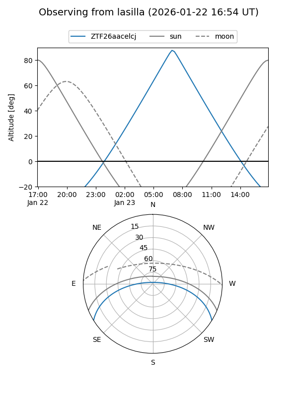
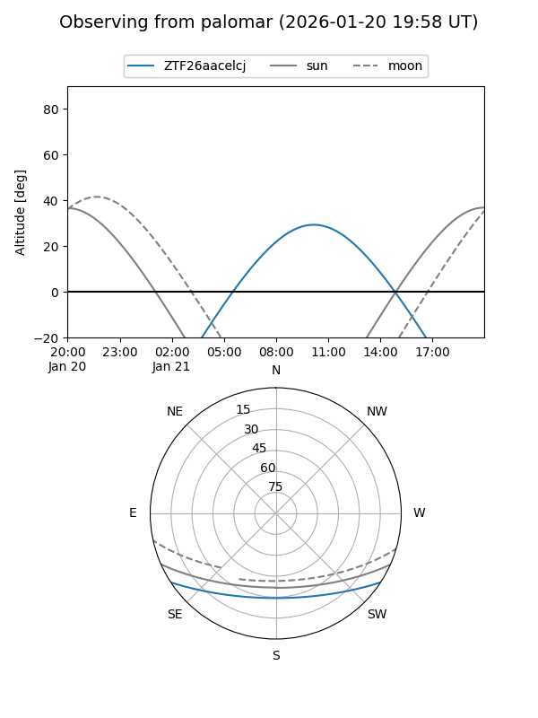

ZTF26aacelcj
Target ZTF26aacelcj at 2026-01-23 10:16
Aliases and brokers:
FINK: link
Lasair: link
ALeRCE: link
alt names
ZTF26aacelcj (ztf,fink_ztf)
Coordinates:
equatorial (ra, dec) = 156.2173,-27.17739
equatorial (HMS+DMS) = 10:24:52.15,-27:10:38.60
galactic (l, b) = (266.9774,+25.27721)
Flags:
Photometry:
last ztfg=18.06, ztfr=17.40
1 ztfg, 1 ztfr detections
Lightcurve

Visibility


Additional plots